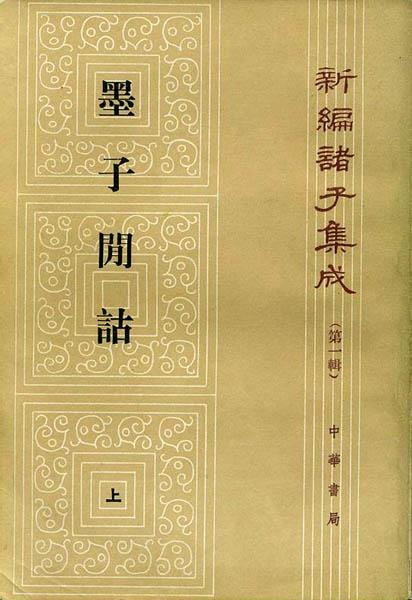

|
|
||||||||||||||||||||||||

|
参考书目： |
| 1.孙诒让：《墨子间诂》，中华书局。 |
| 2.王叔珉：《墨子校证》，见《史语所集刊》第30本第1分册，1959年。 |
| 3.张纯一：《墨子集解》，1931年。 |
| 4.岑仲辭：《墨子城守各篇简注》，中华书局。 |
| 5.张小言：《墨子经说解》 |
| 6.谭戒甫：《墨辩发微》 |
| 7.高 亨 ：《墨经校诠》，北京1950年。 |
| 8.栾调甫：《墨子研究论文集》，人民出版社，1957年。 |
|
电子资源： 1.《墨子閒詁》 原文 卷一至五 六至九 十至十二 十三至十五 附錄
|
|
北京大学历史学系·中国古代史教研室·何晋
制作
Copyright
|